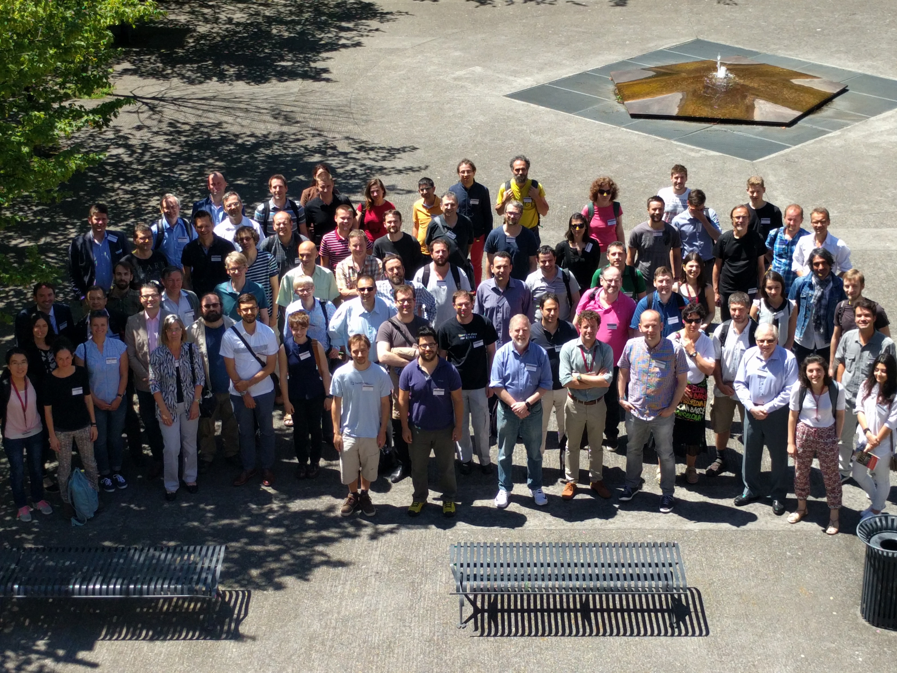

|
|
|
COST Action IC1205 Industry Day
The COST Action IC1205 on Computational Social Choice is a European research network with members from 39 countries who work on topics related to collective decision making, such as elections, fair allocation of resources, and matching markets.
The Industry Day will take place at the Manufacture des Tabacs on 21 June 2016. The aim of the Industry Day is to bridge the gap between current theoretical research in computational social choice and innovative applications in industry and policy making related to collective decision making.
The programme will consist of a number of invited keynote presentations by representatives of companies making innovative use of collective decision making technologies. There will also be a poster session for researchers seeking contact with industry. If interested, please submit an abstract of up to 250 words by email to comsoc.toulouse@gmail.com, with the subject "COMSOC-16 poster submission", anytime before 18 May 2016. In the body of this email, please indicate whether you want to present at the Industry Day, at COMSOC, or both.
Participation to the COST Action IC1205 Industry Day is free, but registration is required.
All talks are in Amphiteatre MI V - Colloque - Guy Isaac (batiment I), registration is at the entrance of batiment E, coffee breaks and poster presentations are in the hall of batiment E.
Invited speakers
Participants

Program
Abstracts
- Budget Allocation using Weakly Coupled, Constrained Markov Decision
Processes (slides)
Craig Boutilier (Google, USA)
Abstract: We consider the problem of budget (or other resource) allocation in
sequential decision problems involving a large number of concurrently
running sub-processes, whose only interaction is through their
consumption of budget. We use the case of an advertiser interacting
with a large population of target customers as a primary motivation, and
consider two complementary problems. We first introduce budgeted MDPs
(BMDPs), an MDP model in which policies/values are a function of
available budget, (c.f. constrained MDPs which are solved given a fixed
budget). BMDPs allow one to explicitly trade off allocated budget and
expected value. We show that optimal value functions are concave,
non-decreasing in budget, and piecewise-linear in the finite horizon
case, and can be computed by dynamic programming (and support ready
approximation). Our second contribution is method that exploits BMDP
solutions to allocate budget to a large number of independent BMDPs,
coupled only by their common budget pool. The problem can be cast as a
multiple-choice knapsack problem, which admits an efficient, optimal
greedy algorithm. Empirical results in an online advertising domain
confirm the efficacy of our methods.
Joint work with Tyler Lu.
- An introduction to electronic voting, with an application to single transferable vote (slides)
Jacques Traoré (Orange Labs, France)
Abstract: We will focus on this talk on electronic voting which emulates traditional voting in a networked environment. We will first introduce the model of e-voting and present the security requirements that an e-voting system must fulfil in order to be a proper substitute for a paper-ballot system. We will then address some particular drawbacks of traditional and e-voting systems and show that recent works give serious hope to overcome them -or, on the contrary, annihilate such a hope. In particular, we will explain how to securely handle complex election methods such as Single Transferable Vote. We will also give evidence that the "perfect system" cannot exist, by mentioning some recent impossibility results. In particular, perfect ballot secrecy and "universal" verifiability of the outcome of the election cannot be satisfied at the same time. We will conclude our presentation with a discussion of ongoing research in the area of e-voting protocols.
- LiquidFeedback and a fair process of
decision making (slides)
Andreas Nitsche (Interaktive Demokratie and LiquidFeedback, Germany)
Abstract: The talk will describe the challenge of debates within large scale
groups and how LiquidFeedback provides a self-organized opinion
formation process without moderator intervention even when real
conflicts are present. It will explain how LiquidFeedback protects
against the dominance of noisy minorities, hate speech and trolling, but
at the same time makes sure minorities can express their point of view.
The talk will also elaborate how LiquidFeedback can scale up to an
unlimited number of participants by using transitive proxy voting and
debate empowerment to allow a dynamic division of labor based on
individual choice (sometimes referred to as Liquid Democracy). It will
be shown how LiquidFeedback determines the voting options and avoids
encouragement for tactical voting in order to find the unbiased
collective preference. Other aspects of the talk are credibility and a
wide range of use cases.
- Issues in Real-World Matching Market Design (slides)
Elliott Peranson (National Matching Services Inc., Canada)
Abstract: Matching programs based on the deferred acceptance algorithm have been implemented in many markets for the placement of individuals into competitive positions. This session will focus on practical issues involved in initiating and administering a matching program for professional training positions, such as undergraduate and post-graduate internships and residencies. Market participants must first be convinced it will work for them. The market rules must be clearly defined, and the resources necessary to administer the program must be in place. The matching algorithm has evolved to meet real-world requirements, but this has required the development of mechanisms to address market instabilities. Techniques have also been developed to adjust the match processes to meet non-standard recruiter requirements. Finally, there may be legal issues that need to be addressed.
- Paired donor kidney transplantation in the UK(slides)
Matthew Robb (NHS Blood and Transplant, UK)
Abstract: There are currently over 5000 patients in need of a kidney transplant in the UK. The average waiting time is over 3 years for a deceased donor kidney and in this period the health of the patient deteriorates further. The best case scenario for a patient is if they have a willing living kidney donor (relative, partner or friend), eliminating waiting time on the list. However, even if the patient has a willing donor the transplant cannot always go ahead due to a blood group or tissue type incompatibility. The National Living Donor Kidney Sharing Scheme provides such patients an alternative route to transplantation. The matching process developed in collaboration with colleagues at the University of Glasgow utilises integer programming to maximise the number of transplants according to criteria agreed with the transplant community. This has now helped facilitate over 550 transplants.
Sponsor
The Industry Day is funded by the Cost Action IC1205 on Computational Social Choice.
|

{kind=link}